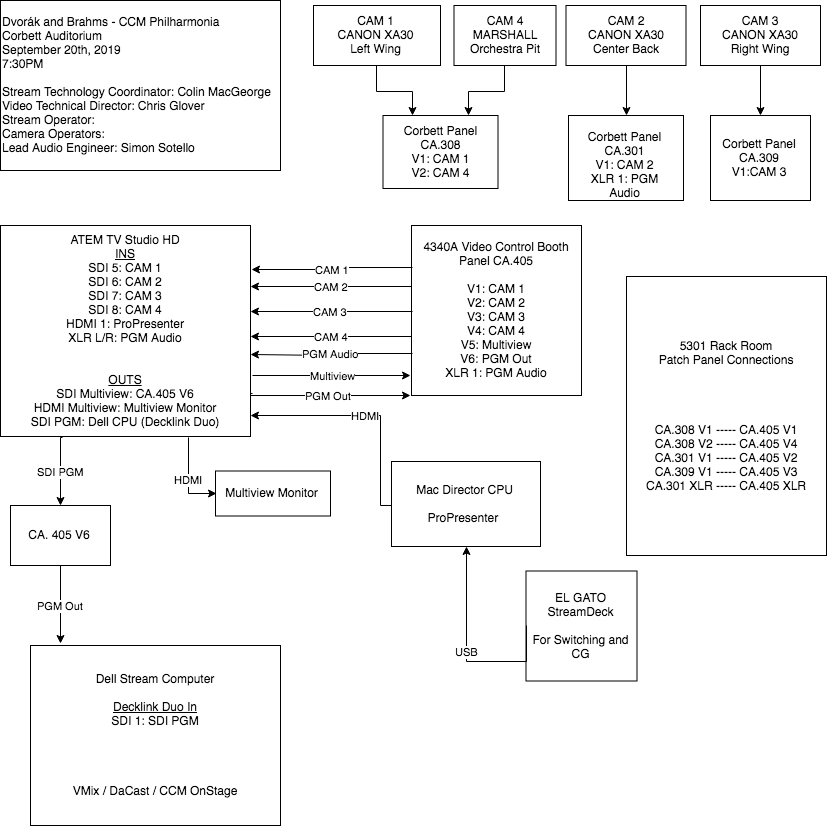

<!DOCTYPE html>
<!-- <html lang="en">

  <head>
    <meta charset="UTF-8">
	<meta http-equiv="X-UA-Compatible" content="IE=edge">
	<meta name="viewport" content="width=device-width, initial-scale=1">
    <title>Colin MacGeorge</title>
  
	<link href="css/bootstrap-4.3.1.css" rel="stylesheet">
	
  </head>
<link href="https://fonts.googleapis.com/css?family=Oswald&display=swap" rel="stylesheet">

<style>
body {
	font-family: Cambria, "Hoefler Text", "Liberation Serif", Times, "Times New Roman", "serif"'monospace';
}
h1 {
	font-family: 'Oswald', sans-serif;
	text-align:center
}
	p {text-align:right}
img {
	border: thin black
}
ul {
	padding: 10px 20px
}
li {
	text-decoration: none;
	padding: 0px 15px;
	list-style-image: none
}
a {
	color: white;
}
a.hover {
	text-decoration: strike-through
}
ul {
	list-style-type: none;
	margin: 0;
	padding: 0
	width: 60px;
}
li a {
	display: block;
}
.topnav {
    align-content: center;
    justify-content: center;
	background-color: slategrey;
	display: flex;
	color: white;
}

    .title {
        font-family: serif;
        display: flex;
    }    
</style>

<body>
	<div class="title"><h1>Colin MacGeorge</h1></div>


<ul class="topnav">
	<li> <a href="index.html"> Home </a> </li>
    <li> <a href="work.html"> Work Experience </a> </li>
	<li> <a href="videos.html"> Video Work</a> </li>
    <li> <a href="streaming.html"> Live Streaming Work</a> </li>
	<li> <a href="https://www.youtube.com/channel/UCUJJxMmLyUxnqWRKOJH_xmA?view_as=subscriber"> YouTube Channel </a> </li>
</ul>
	

<div class="col-12 mt-5">
<hr>	
<div class="d-flex align-content-center justify-content-center"> <iframe width="560" height="315" src="https://www.youtube.com/embed/No46bqlCN-U" frameborder="0" allow="accelerometer; autoplay; encrypted-media; gyroscope; picture-in-picture" allowfullscreen></iframe> </div>	

 <h6>"The University of Cincinnati College-Conservatory of Music (CCM) opens its CCMONSTAGE 2019-20 event series with a performance by the CCM Philharmonia featuring faculty artist Giora Schmidt on Dvořák's Violin Concerto in A Major. Maestro Mark Gibson conducts.<br>

This performance was streamed live on Friday, Sept. 20, 2019, from CCM's state-of-the-art Corbett Auditorium. Learn more about CCM's nationally ranked and internationally renowned programs by visiting https://ccm.uc.edu."</h6>	
<ul><strong>Technical Producer</strong>
<li>Encoder Setup</li>
<li>Video and Audio Signal Patching</li>
<li>CDN configuration with multibitrate output</li>
<li>Live captioning with ASR</li>
</ul>
<ul><strong>Video Editor</strong>
<li>File Management</li>
<li>Editing and captioning with premiere pro</li>

</ul>

<p>Signal Flow Design</p>  
<div class="col-6"> </div>
    
</div>	
<footer>
<hr>
<h6>&copy; Colin MacGeorge 2020</h6>

	<script src="js/jquery-3.3.1.min.js"></script>


	<script src="js/popper.min.js"></script> 
	<script src="js/bootstrap-4.3.1.js"></script>
</footer>	
  </body>
</html>